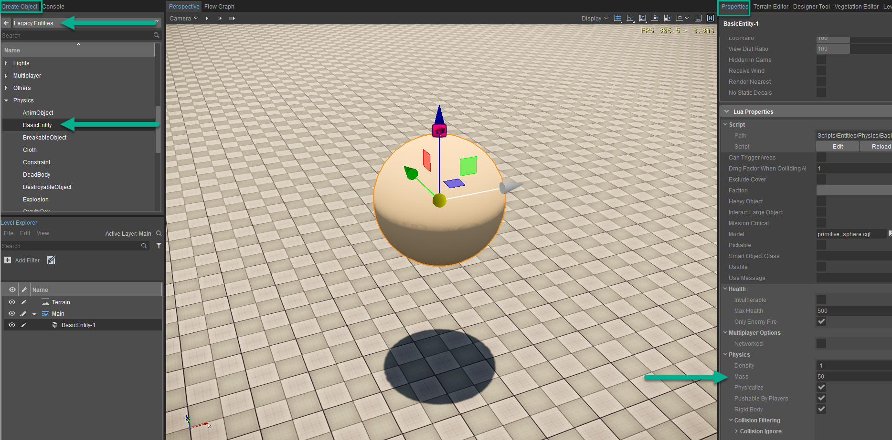
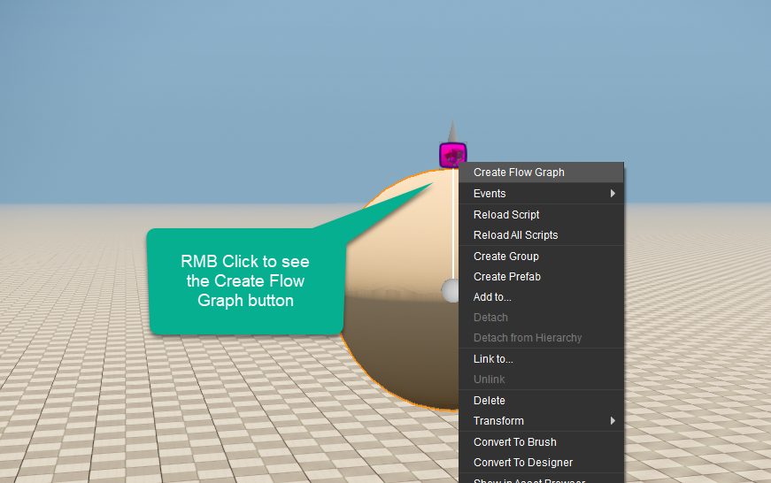
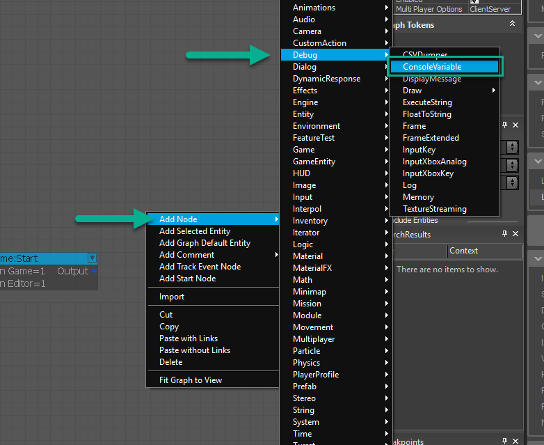
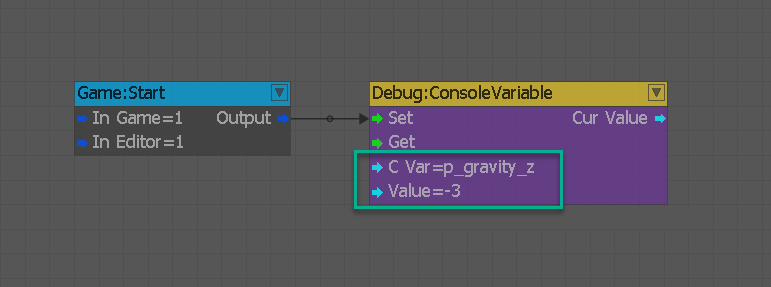
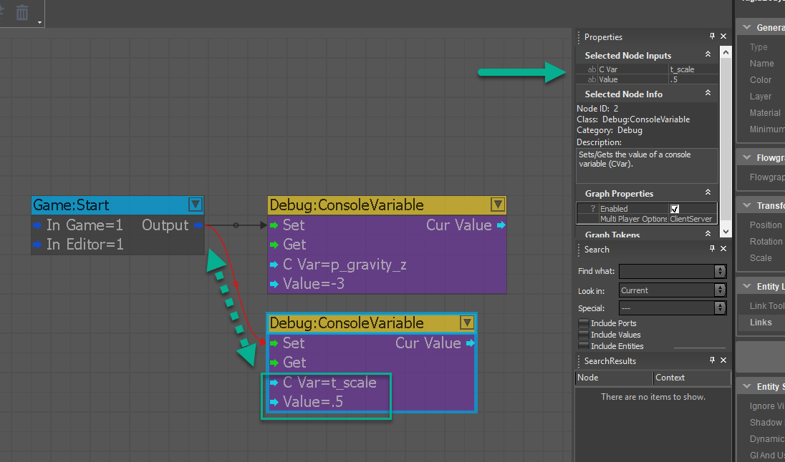

Как мы корректируем переменные глобально?
Если вы впервые прикасаетесь к Flow Graph или настраиваете переменные консоли, я рекомендую вам пройти краткий курс Flow Graph, чтобы ознакомиться с концепциями. Чтобы на мгновение скорректировать наш путь, мы рассмотрим в этом разделе две консольные переменные, которые позволят нам настроить универсальные настройки как гравитации, так и скорости воспроизведения времени. Вообще говоря, если вы хотите сделать это навсегда, вам следует сделать это в Flow Graph при запуске игры или запрограммировать это непосредственно в вашей игре. Ниже приведено описание short каждой из переменных консоли, которые мы будем предоставлять через Flow Graph:
- t_scale - Эта переменная позволяет вам определить шкалу времени и открывает возможности для таких эффектов, как время пули, как это можно увидеть в популярной франшизе «Матрица».
- p_gravity_z - по умолчанию этот диапазон может измениться на -13 или физически точный в модели на -9,81 и представляет собой точную гравитационную силу, действующую на весь уровень для имитации условий реального мира. Уменьшение негативности этого приведет к тому, что мир будет имитировать эффекты других планет или больших масс, таких как Луна.
Управление переменными консоли времени и гравитации
Выполните следующие шаги, указанные ниже, чтобы изменить скорость времени и влияние гравитации:
- Создайте базовую сущность, перейдя в Создать объект -> Устаревшие объекты -> Физика -> BasicEntity и перетащите его на сцену. Прокрутив вниз правую часть панели свойств, мы захотим изменить массу с -1 на 50, чтобы применить правильную физику.
- Щелкните правой кнопкой мыши сферу и выберите Создать Flow Graph. Назовите его «physicsQuickStart», если вы не сделали этого раньше.
- Создайте Игра:Начать node для подключения наших переменных консоли. Чтобы получить доступ к узлу по умолчанию, который мы будем использовать для размещения переменной, щелкните правой кнопкой мыши график и перейдите к Добавить узел -> Отладка -> ConsoleVariable. Добавьте одну на сцену и скопируйте вторую, поскольку нам нужно объявить две переменные.
- Мы можем начать вводить переменные и их значения в соответствующие узлы. Для настройки гравитации мы стремимся уменьшить ее примерно до 1/3 земной при настройке -3. Наряду с этим мы постараемся сократить время вдвое при установке его на .5 по стоимости. После того, как у вас есть значения, просто убедитесь, что Игра:Начать Узел имеет выходные данные, поступающие в установленный входной порт каждого из ваших узлов консольных переменных.
- Наконец, в качестве краткого примечания вы также можете объявить переменные консоли в самом файле Cryproject, и тогда они будут универсально установлены при запуске системы на случай, если вы хотите всегда иметь настройку для всей разработки. Файл Cryproject находится в корневом каталоге вашего проекта и может быть открыт в любом текстовом редакторе. В моем случае я решил использовать Notepad++. Просто введите текст, как показано на рисунке ниже, в файл CryProject и нажмите «Сохранить» (Требуется перезапуск редактора).
Шаг 1

Шаг 2

Шаг 3

Шаг 4-1

Шаг 4-2
